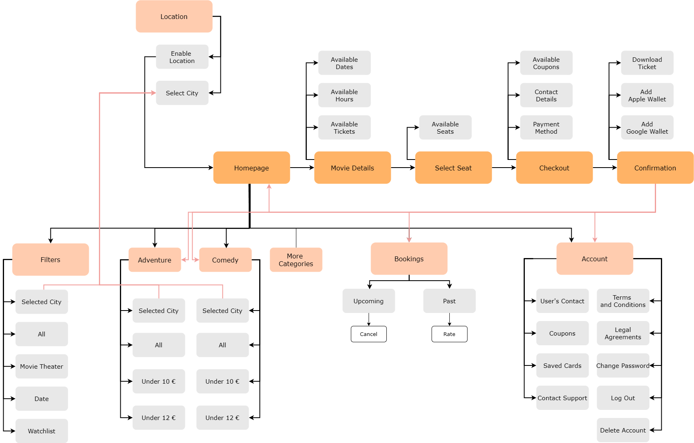

UX Designer
ToolFigma, Google Doc, Google Slide
DurationNovember 2024 to December 2024 - 3 Weeks
The Product
TicketFlix is a web-based platform that allows users to browse movies, book tickets, and manage their cinema experiences from their desktop. Designed for an intuitive and structured browsing experience, the website makes it easy to explore movies, compare options, and complete bookings effortlessly.
The Goal
Enhancing the movie-booking experience with a user-friendly web platform optimized for desktop browsing. The website offers an efficient way to discover movies, select showtimes, and secure tickets while providing a clear and accessible interface.

Secondary Research
Through my secondary research, I focused on understanding whether a web-based ticketing system for booking movie tickets would be effective and how it compares to mobile applications. According to a published paper titled 'A Case Study on Online Ticket Booking System Project' it was found that users often prefer a web-based system due to its ease of use and comprehensive features, such as detailed information on movie details, reviews, and other relevant movie details. This makes the booking process more informative and straightforward, as opposed to mobile apps, which some users find complicated and uncomfortable to navigate. In fact, the study suggests that while mobile apps are widely available, many users feel uneasy using them for ticket bookings, further emphasizing the preference for web-based platforms.
How Might We's
By reading more papers like the previous one and turning them into opportunities for design through well-defined questions, I found it easier to create a wider variety of design solutions.
Sitemap
The sitemap I created structured and categorized the main pages and features that will be available to the user. I wanted the process to be as simple as possible and naturally guide the user to reach their destination with ease. Thus, adding to their user experience and keeping them on their happy path.
User Flows
I created three user flows that highlight the key functionalities the TicketFlix website offers to its users.

Paper Wireframes
When ideating designs through paper wireframes I prioritized quantity over quality.

Wireframes and Low-Fidelity Prototype
Mainly going off of my paper wireframes I made some adjustments and refinements to it's digital equivalent.


I developed a moderated interview script for the usability study and documented the key participant characteristics
in a well-structured google doc. Additionally, I outlined essential factors that influenced the project, including KPIs and project goals.
You can view the full research study plans here.
Based on participants' responses, I synthesized my findings into actionable insights and prioritized them based on their impact on the user flow.
Style Guide
After conducting the usability study and refining my digital wireframes, I focused on defining the visual identity of the website. This included selecting the appropriate typeface, colors, and UI components to ensure a cohesive and user-friendly experience.
The style guide I developed for the website maintains consistency with the TicketFlix brand while adapting to a larger screen experience. It features a clean and modern sans-serif typeface, a structured yet visually engaging layout, and intuitive UI elements designed for seamless navigation.
Mockups and High-Fidelity Prototype
With these insights, I was ready to refine the visual details and bring the TicketFlix website to life. I focused on creating a modern and engaging interface that aligns with the brand’s identity while ensuring a seamless browsing and booking experience. The design incorporates a clean layout, a vibrant yet balanced color palette, and intuitive navigation to enhance user interaction and accessibility.


The final product of this project is a clickable high-fidelity prototype hosted through Figma's prototype feature.

Demo clickable prototype here.
The TicketFlix website extends the platform’s accessibility, allowing users to book movie tickets effortlessly from any device. By focusing on an
intuitive layout and seamless navigation, it enhances the online booking experience and provides an alternative to mobile apps for those who prefer browsing on a larger screen.
Throughout this project, I deepened my understanding of designing for different platforms and the importance of adapting user flows based on user preferences. This experience
reinforced the significance of usability testing and iterative design in crafting an efficient and enjoyable digital experience. Moving forward, further refinements based on
additional user feedback could further enhance the website’s functionality and accessibility.